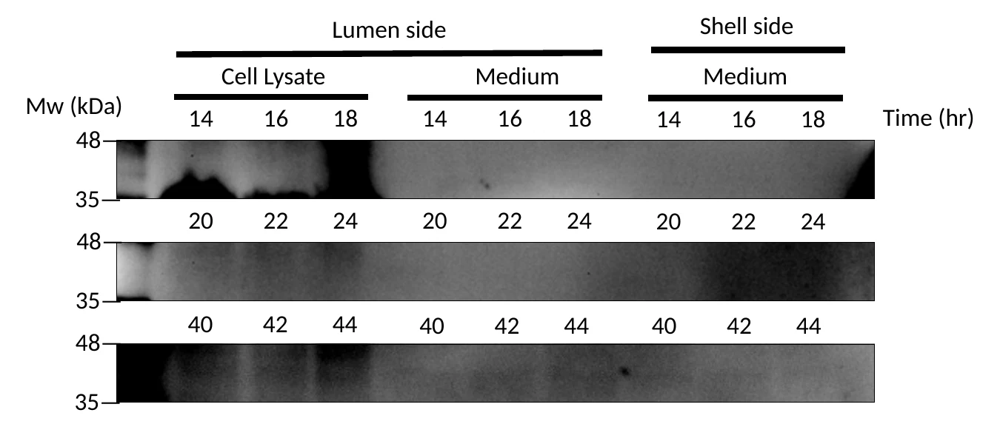
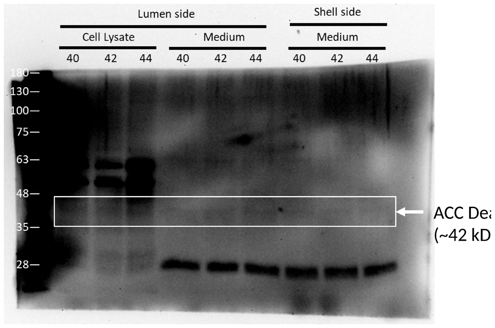
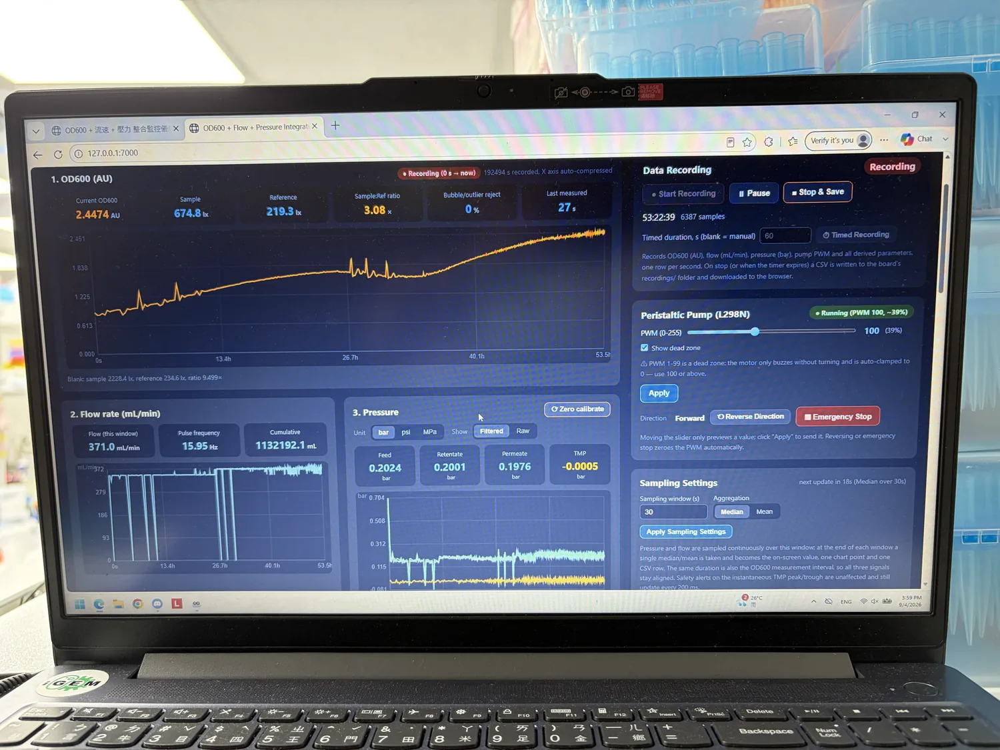

Photograph: five members of the team at work in the wet lab. Three are around the pressure-sensor rig in the foreground, with its clamp stand, transducer, graduated cylinder, media bottle, peristaltic pump and logging laptop; two more are pipetting at the bench behind.
Seven cycles, and the six arrows between them
- Circuit the four-module light switch Two cycles: one closed on a named failure, one closed.
- Protectant the protectant it makes Three cycles: two closed on a named failure, one still open.
- Reactor the reactor it grows in One cycle, closed.
- Photometer the instrument that watches it One cycle, closed.
- 7Cycles
- 24Iterations inside them
- 1Still open
- 3Closed by a named failure
- 35Figures, all ours
- Drawing
- Engineering Success
- Revision
- 4 September 2026
- Status
- Draft
Every number on this page is checkable somewhere below
| Qty | Item | How it is checkable |
|---|---|---|
| 7 | cycles over 24 iterations, one still open | Each cycle is a row in the revision table, and each row's “what changed next” cell names a decision. |
| 434h | unbroken in-line OD600 | Eighteen days, 2,671 valid readings, zero samples withdrawn from the loop, on an instrument we designed and printed ourselves. |
| 4 | modules joined and junction-checked at Level 2 | Two ACDI clones confirmed on 1 September across three
internal junctions, after three consecutive Golden Gate rounds returned
nothing. |
| 53h | with a live culture in the loop, every subsystem logging | Membrane, photometer, three pressure sensors, flow meter, stirrer and filters on one clock and one file. OD600 0.1738 → 2.4474 AU, 1,132 L through the loop, transmembrane pressure flat throughout. |
| 1 | reactor fault the instrument flagged while it happened | The recirculation pump failed at the start of August. The photometer's reference channel marked the window untrustworthy as it ran, which is how the cause was reconstructed afterwards. |
- A four-module optogenetic circuit assembled and junction-checked at Level 2. Three junction PCRs at 375, 632 and 661 bp on 1 September 2026, after the insert-to-vector ratio was changed on 28 August. The individual Level 1 modules are sequence-confirmed; the joined Level 2 construct is not yet.
- Two instruments built, one of them an instrument nobody sells. A ratiometric in-line photometer with a 0.2 mm optical path and a documented run of 434 hours, and a hollow-fibre perfusion reactor at version 6. Specifications and bills of materials are on Hardware.
- Fifty-three hours with a live culture in the instrumented loop. The two dashboard photographs in the reactor cycle are the same instrument against the same blank at the two ends of the run, which is what makes their OD600 numbers comparable. The blot on that run's samples is cycle E3, and it is also where we say what that blot does not show.
- One containment claim retracted by us, in writing, before anyone asked. The old reactor specification claimed a 50 kDa cut-off and said the membrane blocks outer-membrane vesicles. The part we actually bought is 0.2 µm and does neither. We withdrew both claims and kept the one that survives: the membrane retains whole B. subtilis, and a shell-side plate from the very first reactor run is the evidence.
Every cycle is a loop, and the arrow leaving it is the Redesign step
- Closed
- Closed by a failure we could name
- Still open
- The next cycle in the same track
- A result that changed another track
- D B T L Hover an arc to read that step
The six arrows, and what each one carried
- C1 → E3 changed another track
The shuttle vector built by hand in April is the one the kit turned out to already contain.
- C2 → E3 changed another track
The output module is shared: light-driven in the circuit track, constitutive in this one.
- E3 → R changed another track
The constitutive strain E3 built, and could only show one blot lane for, is the culture the reactor grew for fifty-three hours.
- R → E3 changed another track
Sampling both sides of the membrane is only possible because the run had two sides to sample; the reactor is what turned one blot lane into twenty-seven.
- R → P changed another track
Putting the beam in the return leg, downstream of the pump, is what made the 434-hour run possible.
- P → R changed another track
The instrument flagging its own fault window is the argument for running the reactor unattended.
Each loop is one cycle, broken into the four arcs the whole page is written in: Design at the top, Build on the right, Test at the foot, Learn on the left. The mark at the centre is the work that cycle did. The fifth heading, Redesign, is not on the ring because it is the arrow: what a cycle changed is what leaves it. Six loops are closed, three of those on a failure we could name, and one is still open. Hover or focus a loop to read it, or an arc to read that one step.
Revision history
Replacing a leaking fitting is a repair. Replacing it because the previous design's behaviour was measured and found unacceptable is an iteration. An iteration has to have a question we did not know the answer to, something built or changed to answer it, a measurement, and a decision that altered what came next. Twenty-four passed that test. If any of the four is missing, the work is in the notebooks and not on this page.
Those twenty-four are written up here as seven cycles, one per turning point, because that is how they were actually decided. The reactor's eight prototypes were one argument about one machine, and splitting them into eight entries made the argument harder to follow, not easier to check. Each cycle below names its own iterations and dates, so the compression is visible: the reactor cycle covers eight builds from 6 June to 4 September, and the photometer cycle covers four builds plus a costed fifth that has not been made.
Every cycle uses the literal headings Design, Build, Test and Learn, and adds Leiden 2023's fifth heading, Redesign, which forces us to write down what changes next and why.
- Cycle closed
- Closed by a failure we could name
- Still open
| Rev | Track | The question it asked | What the test said | What changed next | State |
|---|---|---|---|---|---|
| C1 | Circuit | Which assembly system will actually close a four-module circuit in B. subtilis, and what should carry the parts into it? | MoClo 2.0 gave no colonies; the SubtiToolKit gave four Level 1 positions in eight days; the pGEM-T donor shared ampicillin with the destination | Parts rebuilt in the kit's chloramphenicol Level 0 vector | Named failure |
| C2 | Circuit | Are the colony screens we have been reading actually reading insert, and will four transcription units then join at Level 2? | The old primer pairs gave product with no template; three Level 2 rounds returned nothing until the insert-to-vector ratio moved | Audited primers everywhere; Level 2 fixed at 1:5 and 1:7 | Closed |
| E1 | Protectant | How short can BoPep4 be and still bind, and which synonymous coding sequence gives B. subtilis the best chance of translating it? | Confidence peaks at 9–23; the top-ranked codon design left the Shine–Dalgarno core worse than wild type | Objective replaced by a bottleneck, 7.9× gain | Named failure |
| E2 | Protectant | Do the methods that chose this sequence survive being checked against their own controls? | Five claims retracted; a flood fill showed the C-terminal tag destroys the receptor anchor | Reordered with the tag on the N terminus | Named failure |
| E3 | Protectant | Does the constitutive strain make ACC deaminase, keep making it in the reactor, and does any of it cross the membrane? | Positive in all nine cell-lysate lanes from 14 to 44 h; the only sharp band in the medium runs below the ACC deaminase window and is equal on both sides | Open: assign the lower band; the WB800N comparison is still unrun | Open |
| R | Reactor | Can a hollow-fibre loop we can afford hold a growing culture and instrument it for days without a person touching it? | OD600 0.1738 → 2.4474 AU over 53 h 22 min, 1,132 L through the loop, transmembrane pressure flat at −0.0005 bar | The reactor became the sampling instrument for E3 | Closed |
| P | Photometer | Can students build an in-line OD sensor that survives weeks in a loop and agrees with a commercial instrument? | 434 h and 2,671 valid readings with nothing withdrawn; agreement with a benchtop to 0.024 OD below OD 1.2 | Calibrate on cells, not on TiO&sub2;; then strip the optics for cost | Closed |
The dual-wavelength LED array, DiOPAL, ran its own iterations: the photon-flux unit error caught before any dose figure was published, and the decision to sort every LED by hand after finding a 25 % spread across parts sold as identical. Those are documented where the array is: Hardware · DiOPAL, and are not counted in the twenty-four.
Two things had to exist before cycle one could run
ReLeaf grows engineered Bacillus subtilis inside a hollow-fibre membrane, feeds it green light when a plant is under stress, and lets the protectant the cells make cross the membrane into the root zone while the cells themselves stay behind. Two things had to exist for that to be more than a diagram: a light-responsive circuit in B. subtilis, and a vessel that keeps a culture alive and instrumented for long enough to be worth switching on.
The optogenetic system is four transcription units, not one construct
The light switch is built on the cyanobacterial CcaS–CcaR two-component system, which senses green light near 520 nm and drives the PcpcG2 promoter. CcaS needs phycocyanobilin as its chromophore and B. subtilis makes none, so the system is four transcription units, designed, assembled and screened separately before anything was joined:
A · Chromophore supply
Ho1::pcyA: heme oxygenase and PCB ferredoxin
oxidoreductase, run as one operon, so the chassis makes its own
phycocyanobilin.
B · Light sensor
CcaSm3, the photoreceptor kinase, built
twice, under PliaG and under PlepA, because we did
not know what expression level it wanted.
D · Response regulator
CcaR, the partner that CcaS phosphorylates, and the
protein that actually binds PcpcG2.
I · Output
PcpcG2-veg driving a secretion-tagged cargo:
csn::ACCD, csn::LEA, and a chromoprotein
reporter, csn::AmilCP, for reading the switch by eye.
The letters are the position labels used on every gel in the lab record and in
every construct name below, so a clone called ACDI is unambiguous:
chromophore module A, the PlepA sensor, CcaR, and the
ACC-deaminase output. The same vocabulary is used on
Parts and Results.
Three constraints were settled before the first assembly, and they set the cycles
- The chassis is B. subtilis, and we assumed it would recombine. Four copies of one terminator in a single plasmid, in a naturally competent host, looked like a substrate. That assumption drove the redesign in cycle C2, and C2 is also where an expert told us the assumption was wrong. It is listed because it shaped the work, not because it survived.
- The vessel had to contain the organism, not just hold it. The pivot on 15 April committed us to keeping engineered bacteria inside a sealed vessel and letting only the product out. That is a membrane specification, and it is why the reactor is hollow-fibre and not a stirred tank.
- School budget, school lab. A commercial in-line OD sensor and a chlorophyll fluorometer were both priced and both dropped. The fluorometer went on 11 May on staffing, not feasibility; the OD sensor we built instead.
Cloning the four modules
Two cycles over nine iterations, and only the first iteration is about the circuit design. Everything after it is about the assembly method, because that is what stopped us. We changed cloning systems once, changed the part carrier twice, audited our own screening primers, and finished on a stoichiometry change. The DNA design barely moved.
The four modules share a ribosome binding site, a terminator and, for a while, a promoter, so every problem below hit all four at once. One write-up covers all four.

ACDI clones, from the 1:5 and 1:7
reactions, screened across three internal junctions each: 375, 632 and
661 bp. This is the four-module circuit, joined and checked at the joins.
Cropped to the gel and scaled. No other adjustment.
C1
Two cloning systems and two part carriers, and the marker clash that ended the argument
Which assembly system will close a four-module circuit in B. subtilis, and what should carry the parts into it?
ResultMoClo 2.0 gave no colonies at all; the SubtiToolKit gave four Level 1 positions in eight days; the pGEM-T donor shared its resistance marker with the destination.
Changed nextParts rebuilt in the kit's chloramphenicol Level 0 vector
DesignThree iterations: MoClo 2.0, the SubtiToolKit, pGEM-T Easy
MoClo 2.0 imposes two things on every part: no internal BsaI site, and
a pair of 4 bp overhangs that fix the part's position. The harder
problem was the destination. Our shuttle vector pNW33N, in the team's own
words, is specific in conventional restriction cloning but not Golden
Gate assembly
, so before assembling anything we had to clone the sfGFP
dropout cassette out of pJUMP49-2B into pNW33N to make
pNW33N-L2(sfGFP).
The SubtiToolKit, which replaced it, is an EcoFlex-derived Golden Gate kit
for B. subtilis with pre-built Level 0 part vectors and
Level 1 destinations carrying sfGFP dropouts. It replaced a bespoke
overhang table per construct with one 29 bp universal primer tail: an
ATATAT spacer, a BpiI site for Level 0 entry, and a
BsaI site whose inner four bases define the part's position at
Level 1. Where it can, one overhang does two jobs: in the chromophore
module's forward primer the Level 1 overhang is TATG,
which is also the start codon of ho1. Every entry in the primer table
from that point carries the same value in its Purpose column:
Convert MoClo to STK
. Sixteen parts, one instruction.
The third iteration left the reactions alone and changed what fed them. Every insert going in was a raw, unsequenced PCR product, so the
coding sequences were individually cloned into pGEM®-T vectors…
Once the plasmids were confirmed by DNA sequencing, they were ready for
Golden Gate assembly.
BuildApril to July 2026
pNW33N was recovered from BCRC, cut, and joined by Gibson assembly to the pJUMP49-2B PCR product (3 µg/mL digest against 60 µg/mL insert, 50 °C for 30 min, into DH5α). Golden Gate ran at 2:1 insert to vector on kanamycin. On 18 June the SubtiToolKit was minipreped and sized, twenty parts on one gel; on 19 June eight inserts were amplified with the new tails and assembled in 20 µL reactions with T4 ligase and BsaI-HFv2, thirty cycles of 37 °C against 16 °C. The pGEM-T rounds ran at 50 ng in a 3,015 bp backbone, 3:1 insert to vector, one hour at room temperature.

pNW33N-L2(sfGFP) clones
C#1 and G#1, uncut and BsaI-digested, against the 100 bp + 3 kb
ladder. The shuttle vector we built by hand to make MoClo possible, and
which the SubtiToolKit later turned out to already contain.
Scaled only. No brightness, contrast or gamma adjustment.

TestNo colonies, then four positions, then a plate where every colony agrees and none is right
MoClo 2.0 gave no colonies at all; the SubtiToolKit gave four Level 1 positions in eight days; the pGEM-T donor shared its resistance marker with the destination.
Under MoClo every part checked out and the assembly did not.
pNW33N-L2(sfGFP) was confirmed by EcoRI/BtsI on 23 April and
by BsaI on 30 April; the synthesised coding sequences by EcoRI on 4 and
6 June, Csn::AmilCP linearising at 3,051 bp and Csn::AccD at
3,423 bp. Then: We initially utilized the MoClo 2.0 standard,
but we realized the resulting quality was quite poor as transformation
didn't reveal any colonies, and the Golden Gate Assembly efficiency was
low.
| Position | Construct | Positive clone | Colony PCR | Sequenced |
|---|---|---|---|---|
| B | PliaG–RBS0–CcaSm3–B0015 | B2 | 24 Jun | 3 Jul |
| D | Pveg–RBS0–CcaR–B0015 | B2, B4 | 26 Jun | 1 Jul |
| E | PcpcG2-veg–EEBD–RBS0–csn::AmilCP–B0015 | G3 | 24 Jun | 3 Jul |
| F | Pveg–EEBD–RBS0–csn::AmilCP–B0015 | H10 | 26 Jun | 3 Jul |
Two positions never came: the csn::LEA pair, under both the
light-driven and the constitutive promoter, in this or any later round.
All seven pGEM-T coding sequences gave product at the expected size on 1 and 3 July and were confirmed by miniprep on 9 July, and the Level 1 reactions fed from them still did not improve. On 13 July the ligase was changed twice over and sixteen colonies screened from each plate. Both plates carry one word in the lab's own figure deck: fail.


LearnThe method was the bottleneck, and the donor shared a marker with the destination
Nothing was wrong with the parts. With no colonies to screen there was no
gel to read and no way to tell a bad overhang from a bad ligation from too
little DNA. What unblocked it was not cleverness: a professor who had worked
on the SubtiToolKit's original paper gave us the kit. What the kit changed
was that it already owned the overhang grammar, the dropout cassettes and
the shuttle vector. Its pSTK-EXP-1-sfGFP is described in
its own library sheet as produced from pNW33N adapted for STK
,
exactly the vector we had spent April building.
The pGEM-T failure has a single cause. pGEM-T Easy carries ampicillin
resistance; so does every Level 1 destination in the kit, and
Level 1 transformations were being plated on ampicillin. Such a plate
cannot distinguish a correct assembly from carried-over donor or a religated
parent. The team recorded it in one line: Some issue happened because the
pGEM-T vector have the same antibiotic resistant gene as Level1.
That is
the only sentence in the archive that states it; the mechanism above is our
reconstruction from the kit's selection map, not something written down at
the time.
RedesignUse the kit's own Level 0, on a different antibiotic
Design dedicated Level 0 primers and assemble the parts into
pSTK-0-sfGFP, which is chloramphenicol-selected, so donor and
destination never share a marker again.
C2
The screening primers were lying, and a ratio change closed Level 2
Are the colony screens we have been reading actually reading insert, and will four transcription units then join at Level 2?
ResultThe old primer pairs gave product with no template; three Level 2 rounds returned nothing until the insert-to-vector ratio moved.
Changed nextAudited primers everywhere; Level 2 fixed at 1:5 and 1:7
DesignPut the screen on trial, then break the repeats
The previous cycle had spent a fortnight reading gels that turned out to mean nothing, so the screening primer pairs themselves were put on trial alongside the move to Level 0.
The redesign that followed had two motives and we wrote them as
alternatives: try changing promoter, RBS, terminator → strength
or recombination issue
. The strength motive is the one written out
in full: sequencing on the chromophore module showed that our
request had no signal
, and the conclusion drawn was about context:
A construct that is functional in its original design may not produce the
same level of expression when placed in a different backbone or combined
with different genetic elements.
BuildLevel 0 from 20 July, then new promoters, terminators and ribosome binding sites
The first Level 0 Golden Gate is dated 20 July, into
STK001_pSTK-0-sfGFP at 346 ng/µL. By 26 July the
four shared regulatory parts existed as Level 0 plasmids in their own
right: Pveg at 2,361 bp, EEBD at 2,392, RBS0 at 2,113 and
B0015 at 2,213.
| Module | First build | Second build |
|---|---|---|
| 1 · chromophore | Pveg – RBS0 – Ho1:pcyA – B0015 | PtagC+RBS – Ho1:pcyA – L3S2P21 |
| 2 · light sensor | PlepA – RBS0 – CcaSm3 – B0015 | PliaG – RBS0 – CcaSm3 – B0015 |
| 3 · regulator | Pveg – RBS0 – CcaR – B0015 | no change |
| 4 · output | PcpcG2 – RBS0 – csn::cargo – B0015 | bkdB cold double → reverted to B0015 |
The new parts were real work: two terminators (L3S2P21 and a
synthesised L3S1P52–L3S2P56 double at 182 bp), two
synthetic ribosome binding sites (MF001 and MF002,
89 bp each), PtagC+RBS, a three-promoter part,
and six alternative constitutive promoters for a strength ladder.

STK-seq and EXP-seq pairs run three ways
(forward with forward, reverse with reverse, forward with reverse),
each with and without template, old pairs against new. Bands in
the same-orientation and no-template lanes are the finding.
Scaled only.

TestProduct with no template, then three identical failures, then two verified clones
The old primer pairs gave product with no template; three Level 2 rounds returned nothing until the insert-to-vector ratio moved.
Product in a lane with no template, or with two forward primers, cannot come
from an insert. New pairs were designed and the affected screens re-run; the
chromophore module was rescreened the same week with the BioBrick prefix
against pSTK-seq-rv at 2,111 bp and gave five positives
that held up. The dropout cassette earned its keep as a screen in the same
weeks: our enzyme digestion results of clone G2 showed the band size of
our dropout cassette, meaning that it was not successfully cloned and that
it was empty.
The individual modules were then fine and Level 2 was not. On 4 August all twenty-four colonies failed. On 9 August all twenty-four failed. On 13 August twenty-four ACDI and twenty-four ABDI colonies failed. Nothing about the design changed between those three rounds, which is the finding. On 28 August the insert-to-vector ratio was swept at 1:5 and 1:7 and both returned positives; on 1 September two ACDI clones were confirmed across three internal junctions at once (pcyA F × CcaSm3 R, 375 bp; CcaS F × CcaR R, 632 bp; CcaR F × CcaSm3 R, 661 bp). Three junctions is what distinguishes a complete circuit from a plasmid that happens to contain one module.


LearnA colony PCR is an instrument, and the premise we redesigned on was wrong
Auditing the screen is the step we would have skipped in a hurry, and it is the one that made the later gels mean anything. Two of the three cloning failures on this page were diagnosed by a control, not by a redesign.
The recombination half of the redesign motive did not survive:
Module 4: Original terminator cold D (Failure) to B0015. Because
Professor Huang thinks recombination in Bacillus is not the issue, we
changed our terminator back to our original plan, B0015.
Module 4's
terminator went back to where it started and the bkdB cold
double survives on disk as the artefact of a redesign we undid. The strength
half stands, and the rebuilt chromophore module is the part we kept.
The Level 2 lesson is blunter. We repeated an identical failing reaction three times before changing a parameter. A fourth repetition would have taught us nothing the first three had not.
RedesignStop building and start illuminating
With a verified four-module Level 2 plasmid in hand, the next cycle is not a cloning cycle. It is the first green-light induction run, described at the bottom of this page.
The protectant and the vector that carries it
The light switch decides when the cells make something. This track decides what. Two of its three cycles happened on a computer, and the most useful thing they produced was a list of five claims we had to retract, one of which had already gone out as a DNA order. The third is the only one that puts the protein on a membrane.
The cargo is BoPep4, a 23-residue plant elicitor peptide from
Brassica, designed to act on the Arabidopsis receptor kinases
PEPR1 and PEPR2. The same vector carries ACC deaminase (ACCD), a
LEA protein, and the chromoprotein AmilCP as a visible reporter. The peptide is
where the design work went, so it is the thread these cycles follow.

E1
Seventeen truncations found the sequence, and the codon optimiser's objective could be gamed
How short can BoPep4 be and still bind, and which synonymous coding sequence gives B. subtilis the best chance of translating it?
ResultConfidence peaks at 9–23; the top-ranked codon design lifted one term and left the Shine–Dalgarno core worse than wild type.
Changed nextObjective replaced by a bottleneck, 7.9× gain
DesignA complete ladder, then base accessibility at the start codon
BoPep4's archetype is AtPep1, whose complex with PEPR1 is solved at 2.59 Å (PDB 5GR8). Both are 23-mers, and the three residues a 2008 structure–activity study found critical, Arg9, Ser15 and Gly17, are conserved at the same positions, along with the C-terminal Asn23. Rather than pick one truncation and defend it we built the whole ladder: every N-terminal truncation from 1–23 down to 17–23, docked against both receptors. Seventeen fragments, two receptors, thirty-four complexes.
With the sequence fixed, the cassette is fixed too: promoter, EEBD,
the MF001 ribosome binding site with its AAGGAGG
Shine–Dalgarno core, the SamyQ secretion signal, the payload, a
6×His tag, then the terminator. The only free variable is
synonymous codon choice. We optimised for base-unpaired probability
from ViennaRNA's base-pair-probability matrix at 37 °C over a
236 nt window, on two regions: the fifteen bases from the start codon,
and the Shine–Dalgarno core. The reference point is a gene that works,
ho1, which scores 0.681.
BuildHADDOCK and AlphaFold3 on every rung, then fifty thousand synonymous draws per construct
Each fragment was docked in HADDOCK 2.5 with restraints derived from its own bound pose and independently co-folded in AlphaFold3, recording interface confidence (ipTM), interface predicted aligned error, buried surface area, salt-bridge and hydrogen-bond counts, and an explicit ledger of which anchors (Lys7, Lys8, Arg9, Arg11, Lys18, Asn23) each cut retained.
For the coding sequence: forty-five editable codons, roughly 50,000 random synonymous variants per payload, each fully re-folded, with restriction sites forbidden across the edit span. Variants were ranked by a simple sum of the two accessibility scores.
Test9–23 is the best-supported fragment, and the top-ranked codon design is worse than wild type where it matters
Confidence peaks at 9–23 and the drop to a non-binder happens between 13–23 and 14–23; the best-scoring codon design left the Shine–Dalgarno core more occluded than the wild type.
| Fragment | Length | ipTM, PEPR1 | Interface PAE | Buried area | Call |
|---|---|---|---|---|---|
| 1–23 (wild type) | 23 | 0.82 | 1.83 Å | 2,754 Ų | binder |
| 9–23 | 15 | 0.94 | 1.41 Å | 2,080 Ų | binder |
| 13–23 | 11 | 0.87 | 2.49 Å | 1,426 Ų | weak |
| 14–23 | 10 | 0.54 | 8.85 Å | 1,346 Ų | non-binder |
| 15–23 | 9 | 0.63 | 5.09 Å | 1,194 Ų | non-binder |
9–23 keeps Arg9, Arg11, Lys18 and Asn23 and drops only the two N-terminal lysines. It is shorter to synthesise, and in the orthologous AtPep1 the 9–23 fragment is reported to retain full activity in planta.
| BoPep4 variant | Start +15 | SD core | Sum | Verdict |
|---|---|---|---|---|
| Wild-type codons | 0.396 | 0.067 | 0.462 | SD occluded |
| Rank 1 by sum | 0.911 | 0.050 | 0.960 | SD worse than wild type |
| Best by sum | 0.732 | 0.641 | 1.374 | usable |
The same pathology appeared in all four payloads: top-ranked designs with start accessibility near 0.98–0.99 and a Shine–Dalgarno core around 0.014–0.055. A sum lets the optimiser buy a large gain in one term with a total loss in the other, and the ribosome needs both.


LearnPick the set that spans the cliff, and score a design on its weakest term
With one control and three test slots the obvious move is to test three things you believe in. We picked 9–23, 13–23 and 14–23 instead: predicted full activity, predicted reduced, predicted dead. A confirmed dead 14–23 against a working 13–23 pins the cliff to Pro13. Three working fragments would only have told us the model likes short peptides.
The objective function was the bug. Ranking moved to J = min(start +15, SD core), so a design is only as good as its weakest term, and the random search was replaced with a deterministic descent that identifies which codons actually base-pair with the initiation region. On BoPep4 the bottleneck went from 0.067 to 0.528, a 7.9-fold improvement, at a codon adaptation index of 0.78. Two further results contradict standard practice: optimising for codon usage alone gives an index of 0.87–0.89 and a bottleneck of 0.054, essentially fully occluded in all four cases, and the published low-GC heuristic we ran as a literature control made one payload worse than its wild type.
RedesignOrder it, then audit the methods that chose it
Eight cassettes went to synthesis in June. Then, with DNA in flight, we went back over how the sequence had been picked.
E2
An audit retracted five claims, and a flood fill showed the tag was on the wrong end
Do the methods that chose this sequence survive being checked against their own controls?
ResultEvery cassette already at synthesis carried a 6×His tag on the end of the peptide that has nowhere to go.
Changed nextReordered with the tag on the N terminus
DesignAudit the pipeline, and simulate what docking cannot see
Two things ran in parallel: a formal methodology audit of every docking campaign scored against its own positive controls, and nine all-atom molecular dynamics runs on the PEPR1 ectodomain, eight with a peptide bound and one apo, with a four-part acceptance test written down before any run started.
Build270 nanoseconds, and a 29-page audit
Nine runs of 30 ns each: 270 ns total, 13,500 frames, 25.9 GPU-hours on a single A100, in AMBER ff19SB with OPC water and 0.15 M salt, differing only in the peptide. Separately, a flood fill of the receptor surface with a backbone-clearance probe, measuring how much room a fusion tag has to escape at each end of the bound peptide, with and without the co-receptor BAK1.
TestThe C-terminal tag destroys the anchor, and passes our own gate anyway
Every cassette already at synthesis carried a 6×His tag on the end of the peptide that has nowhere to go.
BoPep4's C-terminal Asn23 carboxylate clamps receptor Arg487 with both guanidinium nitrogens. Fusing 6×His to Asn23 spends that carboxylate on an amide bond:
| Measure, over 1,500 frames | Wild type | With C-terminal 6×His |
|---|---|---|
| Bidentate salt bridge to Arg487 | 100.0 % | 0.0 % |
| Peptide carboxylate in the guanidinium's first shell | 100 % | 0.0 % (closest 11.65 Å) |
| Charge-centre separation | 3.98 Å | 20.07 Å |
| Backbone RMSD, shared window | 1.67 Å | 1.12 Å — better |
| Pre-registered acceptance gate | pass | passes, spuriously |
The last two rows are the trap. The tagged peptide's C-terminal half is more rigid than wild type, because the six histidines lie down on the receptor surface and add about fifty heavy-atom contacts of their own. Any metric reading only backbone RMSD or a contact count scores that exchange as break-even or better, and our own gate passed it because the criterion looked at one terminal oxygen instead of two.
The flood fill says why the same tag on the other end would be harmless. At the N terminus there are 111 free grid points and a 6.5 Å path to solvent, unchanged by BAK1. At the C terminus, BAK1 closes the channel to two grid points and a 20.9 Å escape path, longer than the tag that has to pass through it.


LearnFive claims retracted, in writing, on one page
The audit did not confirm the pipeline. Most of our docking runs derived their restraints from the pose they were meant to test, which makes them refinement and not confirmation; the resulting clusters carry no information because every model falls into one; the truncation cliff correlates with peptide length at R² = 0.93, so the score is substantially a length ruler; and on a sixteen-analogue benchmark with known activities the protocol's rank correlation is ρ ≈ +0.05. AlphaFold3 failed the same control.
| Claim | Status |
|---|---|
| Truncation is tolerated to about 9–23 | holds |
| Asn23's free carboxylate clamps Arg487 | holds |
| A C-terminal extension breaks that clamp | new, and strong |
| K18R is an affinity enhancer | retracted |
| K8Q is binding-neutral | retracted |
| Docking independently confirms the AlphaFold3 poses | retracted |
| Our docking replicates the 2008 structure–activity data | retracted |
| Docking scores can rank our constructs | refuted |
The whole point-mutation programme went with them, and so did tandem repetition: repeating the C-terminal nonapeptide up to eight times raises the raw score while buried area per residue falls from 127 to 32 Ų and the number of copies actually touching the receptor saturates at three.
We found the C-terminal problem after ordering. Six cassettes were already at the synthesis house, every one tagged at the wrong end. The internal report's own sentence is the honest summary: we had no construct capable of producing a bioactive BoPep4.
RedesignReorder with the tag moved, and buy the peptide directly
Three constructs, 2,106 bp, ordered on 16 August with
N-terminal tags: 9–23 + ASA spacer as the activity
lead with a native C terminus, 9–23 + N-His as the
detectable arm, and a full-length N-His arm. Alongside them, a chemically
synthesised 9–23 peptide from a peptide house — the only thing
that separates “the peptide does not work” from “we
secreted too little to see”, and the only thing that lets the plant
dose–response run before the DNA lands.
E3
The strain expresses for forty-four hours, and the band that reaches the shell side is not the one we were looking for
Does the constitutive strain make ACC deaminase, keep making it while it grows in the reactor, and does any of it cross the membrane?
ResultPositive in all nine cell-lysate lanes from 14 to 44 h. The only sharp band in the medium runs below the ACC deaminase window, and it is as strong on the shell side as on the lumen side.
Changed nextOpen: assign the lower band; the WB800N comparison is still unrun
DesignTake the light switch out of the question, then sample both sides of the membrane
Testing a protectant and a light switch at once means a negative result
explains nothing, so every cargo was also built behind a constitutive
promoter in the kit's shuttle vector pSTK-EXP1-sfGFP, which
replicates in both hosts. Nine such constructs exist. The chromoprotein arm
is deliberate: AmilCP gives a visible phenotype with no substrate and no
cofactor, so transformation success can be read off a plate.
A flask, however, has no other side. Once the reactor put this strain into the hollow-fibre loop, the culture was held in the fibre lumens and the shell space around them was fed by whatever passed the wall. So the second half of this cycle is a sampling plan. Draw three fractions at every timepoint (cell lysate, lumen-side medium and shell-side medium), and read all three on the same membrane, so a band in one can be compared with the same band in the others without a between-gel correction.
If the protectant is made and secreted and the membrane passes it, the same band appears in all three fractions and the shell-side lane is the one that matters, because the shell side is where a root would be.
BuildA voltage window we had to find, then twenty-seven lanes on three membranes
B. subtilis is not easy to electroporate. Cells were grown in LB with 0.5 M sorbitol to OD600 0.85–0.95, washed four times in ice-cold sorbitol/glycerol buffer and concentrated fortyfold to 1–1.3 × 1010 cfu/mL, pulsed across a 0.2 cm gap at 25 µF. The first attempt did not survive its first two pulses: at 2.0 and 1.8 kV with the resistance set to infinity the cuvette arced and the time constant read zero. Putting 300 Ω in parallel fixed it and gave a 6.7 ms time constant, and every later run used it.
For the reactor blot, timepoints were taken in three windows across the run: 14, 16 and 18 h, 20, 22 and 24 h, and 40, 42 and 44 h. Nine timepoints, three fractions each, twenty-seven lanes, one membrane per window. Each membrane was photographed under white light first, so the prestained ladder could be registered against the chemiluminescence frame, and then exposed several times over, so a band that saturates at one exposure can still be read at another.
| Membrane | Timepoints | Chemiluminescence exposures kept |
|---|---|---|
| 1 | 14, 16, 18 h | 10, 7.5 and 5 min |
| 2 | 20, 22, 24 h | 10, 8, 6 and 5 min |
| 3 | 40, 42, 44 h | 10, 8 and 6 min, the 6 min frame shot twice |
Keeping the whole exposure series rather than the best frame is the one methodological improvement this cycle can claim outright.


TestA working voltage window, one blank lane on the sprayed culture, and then nine lanes that hold
Transformation efficiency rises from 2.0 to 2.3 kV and collapses by 2.5 kV. In the reactor, the ACC deaminase window carries signal in the cells at every one of nine timepoints; in the medium the only sharp band runs below that window, and it is as strong on the shell side as on the lumen side.
| Date | Field | Colonies, diluted | Colonies, undiluted |
|---|---|---|---|
| 22 May | 2.0 kV | 31 | 309 |
| 22 May | 2.1 kV | 0 | 302 |
| 22 May | 2.2 kV | 49 | 405 |
| 23 May | 2.1 kV | 1,323 and 1,003 | |
| 23 May | 2.3 kV | 1,606 and 424 | |
| 23 May | 2.5 kV | 37 and 203 | |
The flask blots came first and did not say what we hoped. Three were run, on
2, 7 and 24 August. The 24 August membrane is the only one whose
ladder resolves cleanly enough to assign a molecular weight, and it carries
exactly one band: a sharp, saturated signal at roughly 41 kDa in the
lane loaded with the 18 August culture. The lane loaded with the
23 August culture, the material actually sprayed onto plants, is
blank. The team's minute from 26 August states it plainly:
Originally two day pre-treatment (8/23, 8/24), did Western blot and found
out there's no ACCD in the B Sub. we are spraying the plants with.



LearnExpression is answered; secretion is not, and the membrane is not the reason
- The strain expresses, and keeps expressing. The flask blot could show one lane on one culture with a blank lane beside it. Here the ACC deaminase window is positive in nine consecutive cell-lysate samples spanning thirty hours of a fifty-three-hour run.
- Something protein-sized crosses the membrane freely. The lower band is as strong on the shell side as on the lumen side. Whatever it is, the hollow-fibre wall is not stopping it, which is consistent with the 0.2 µm part we actually bought and not with the 50 kDa cut-off our old specification claimed.
- The cells did not cross with it. The shell-side samples were drawn from a compartment the culture never entered, and the shell-side lanes do not carry the lysate's pattern.
- What we cannot say is that ACC deaminase was secreted. The band that crosses runs below the window the deck labels ACC deaminase, and nothing in our record assigns it. It could be a processed or degraded form of the protectant, or a medium component the antibody happens to bind. A band at the wrong height is not the protein you wanted with a caveat attached; it is an unassigned band.
Two structural gaps in our own method sit underneath all of that. No antibody, dilution or transfer condition is recorded anywhere in our protocols, which means a blot that fails cannot be diagnosed and a negative medium lane cannot be separated from a blot that under-reports a dilute sample. And the medium fractions were not concentrated before loading, while a secreted protein in a 500 mL working volume is a far more dilute sample than a cell pellet.
RedesignAssign the band, concentrate the medium, and run the comparison this cycle was designed around
- Run a size standard for the fusion as built. Compute the expected mass of the secretion-tagged, His-tagged construct, then run purified or induced material beside the bioreactor samples on the same gel. Until the lower band has a name, neither a positive nor a negative secretion result from these membranes means anything.
- Concentrate the medium fractions. Both sides, by the same factor, before loading.
- Record the antibody, the dilution and the transfer conditions.
- Repeat with a no-plasmid control culture in the same rig. If the lower band appears in that too, it is the medium or the antibody and not our protein, and one run settles it.
- Compare B. subtilis WB800N against strain 168. This was the comparison the constitutive-vector work was planned around and it was never performed. WB800N appears exactly once in our entire lab archive, in that plan, with the result field blank. Every number on this page is strain 168, and that is why this cycle is marked open.
The perfusion reactor
Eight prototypes over three months, from a four-part loop that leaked to a machine that held a live culture for fifty-three hours. The biology was never the hard part. Prototypes three to seven were each stopped by a pump, a fitting, a cap or a calculation; the eighth is the first one where every subsystem ran at once, on cells.
The pivot of 15 April committed us to a contained vessel, which is a membrane specification. Beyond that we had almost nothing: nobody on the team had built a bioreactor. The Dean of Research set out five reactor families and suggested a packed bed with the cells immobilised. We chose hollow-fibre tangential flow instead, because it separates the organism from the product by size, which is the containment argument the project needs. That conversation happened in person and nobody wrote down the reasoning at the time, which is a gap in our own record.



R
Eight prototypes, six subsystems, fifty-three hours and a live culture that never had to be opened
Can a hollow-fibre loop we can afford hold a growing culture and instrument it for days without a person touching it?
ResultOD600 0.1738 → 2.4474 AU over 53 h 22 min, 6,387 logged samples, 1,132 L cumulative flow, and a transmembrane pressure that never left zero.
Changed nextThe reactor became the sampling instrument for E3
DesignLeave everything off that a measurement has not asked for
Prototype I was four parts and nothing else: a PES hollow-fibre membrane of about 200 mL lumen volume, a reservoir holding 300 mL of LB, a peristaltic pump, and a luer valve for sampling. No stirring, no aeration, no pH control. Starting with none of them means every later addition has a reason we can point at; adding them together would have meant several things failing at once with no way to tell which mattered.
Two design questions were then settled by arithmetic before anything reached the bench. The first was scale. A hollow-fibre membrane has to be run at a wall shear rate high enough to sweep cells off the fibre wall, 2,000 to 6,000 s−1 for these modules, and that fixes the cross-flow once the geometry is chosen:
| Strategy A · scale up | Strategy B · scale down | |
|---|---|---|
| Module | ∅63 × 300 mm, ~1,300 fibres | ∅10 × 600 mm, 11 fibres |
| Membrane area | 1.3 m² | 0.02 m² |
| Cross-flow at 2,000 s−1 | 16.25 L/min | 129 mL/min |
| Cross-flow at 6,000 s−1 | 48.74 L/min | 388 mL/min |
| Pump available | 1.5 L/min | within reach |
No test was run because none was needed: the arithmetic settles it by a factor of ten to thirty, and we scaled down.
The second was the pinch valve actuator, and the four criteria were agreed before any option was scored, so they could not be bent toward the answer: does it hold when power is cut; how much holding force against permeate pressure; can we build it from parts already in the lab; how much firmware does it need. We had already built a stepper-driven valve. A stepper releases when it loses power, and the loop is full of live engineered culture, so criterion one outranked the other three and decided it alone. We replaced the valve we had already built with a servo. The solenoid is recorded as unscored, not as zero, because we could not source one in time.
Placement was decided by what each sensor is fighting. The module goes in with its lumen ports facing up, so air clears on fill instead of sitting in the fibres. The photometer goes into the return leg, downstream of the pump, because the pump puts a sawtooth into the flow and the longer plumb gives that pulse line length to smooth out in. Upstream would have been shorter, easier and worse.
BuildEight prototypes, 6 June to 4 September 2026
| # | Date | What changed | What it settled |
|---|---|---|---|
| I | 6 Jun | Four parts, unstirred, room temperature, 94 mL/min | Reactor flat near OD600 0.3 against a flask past 2.4; leak at the pump head |
| II | 14 Jun | 200 rpm stirrer, sampling port moved to the reservoir outlet, both arms at 37 °C, BPT tubing in the pump | Plateau at OD600 0.8–0.9 in ~2 h against the flask's 0.6–0.8 in ~4.5 h |
| III | 4 Jul | Module frozen at the small geometry | Scale settled on arithmetic; specification re-checked against invoices |
| IV | 12 Jul | BP8G-AGA transducer on the retentate side, 0–1 MPa gauge, 0–5 V into a 3.3 V board through a divider | Transmembrane pressure on a screen the same evening, with a pump sawtooth on it |
| V | Jul | Servo pinch valve replacing the stepper | Holding on power loss |
| VI | 16–20 Jul | Full rig assembled over four days; module characterised on pure water across eight flow settings, twice | The rig ran; the record of building it did not |
| VII | 5–23 Aug | Magnetic pump, PC-cooling reservoir, cap bored for dissolved-oxygen and pH probes | One accepted, two rejected; autonomy blocked on sterility |
| VIII | 2–4 Sep | Every subsystem switched on at once, on cells, logged to one file | 53 h 22 min with a live culture and a flat transmembrane pressure |
Prototype II's three changes were knowingly confounded. All three were cheap and all three were plausible, we had weeks rather than months, and we accepted that we would not know which one worked. It is recorded here so nobody reads prototype II as proof that stirring alone fixed it; the honest next experiment, stirring alone at 22 °C, is written in the notebook and has not been run.
Prototype VII is the one that mostly failed. The magnetic pump tops out below 200 mL/min against a recommended operating point of 263 mL/min and cannot lift liquid out of the serum bottle; the PC-cooling reservoir existed only to get round that head problem, so it was shelved with it. Only the two-half cap that clamps around each probe cable and screws shut was built.
For prototype VIII the rig went into the 37 °C incubator with the constitutive B. subtilis strain from E3 in a 500 mL reservoir, and every subsystem was switched on at the same time and logged to one file. Sampling was a 30 s median window on all three signals, so one row of the CSV, one point on each chart and one OD600 measurement all cover the same interval.
| Subsystem | What it had to do for 53 hours |
|---|---|
| Hollow-fibre membrane | Keep the culture in the lumens and leave a shell side that can be sampled separately. |
| In-line photometer | Report OD600 every 30 s without a sample being withdrawn from the loop. |
| Pressure sensors × 3 | Feed, retentate and permeate, so transmembrane pressure is a measured quantity and not an assumption. |
| Flow meter | Pulse-counted flow on the same clock as everything else, so a pressure change can be read against a flow change. |
| Magnetic stirrer | Hold the reservoir mixed so the photometer sees the culture rather than a settled layer. |
| Filters | Close the loop at every break in the tubing. |


TestFifty-three hours, and the pressure never moved
OD600 rose from 0.1738 to 2.4474 AU across 53 h 22 min and 6,387 samples, while transmembrane pressure stayed at −0.0005 bar with 1,132 L pushed through the loop.
| Reading | At 06:58 | At 53:22:39 |
|---|---|---|
| OD600, in line | 0.1738 AU | 2.4474 AU |
| Sample : reference | 2070.6 : 236.2 lx, 8.77× | 674.8 : 219.3 lx, 3.08× |
| Bubble and outlier rejection | 0 % | 0 % |
| Flow, current window | 348.1 mL/min | 371.0 mL/min |
| Cumulative volume | 5.1 L | 1,132.2 L |
| Feed / retentate / permeate | 0.2412 / 0.1874 / 0.2133 bar | 0.2024 / 0.2001 / 0.1976 bar |
| Transmembrane pressure | −0.0007 bar | −0.0005 bar |
| Pump | L298N peristaltic, PWM 100 of 255 (~39 %), forward, for the whole run | |
Three rows are worth reading twice. Bubble rejection stayed at zero for the whole run, which is the fault the photometer's first three builds were destroyed by and which the tilted flow cell was supposed to fix. Transmembrane pressure did not move: three sensors that agree to within 0.005 bar at the start still agree at the end, after 1,132 L. And the pump never changed setting, so the flow difference between the two columns is the loop's own behaviour and not an operator.
Two earlier tests stand behind that run. From prototype I, two millilitres of shell-side liquid spread on an LB plate grew no colonies; that plate is still the evidence behind the only containment claim we make. And on 16 August the module was run on pure water across eight flow settings, twice: once fitted, once replaced by plain tubing with every valve and fitting left in place. That showed the module behaves like eleven parallel 1 mm tubes with none blocked, and that the valves, fittings and flow cuvette account for 46 to 55 % of the total pressure drop. Not subtracting them would overstate the membrane's resistance by nearly a factor of two, and every later fouling judgement would inherit the error.
LearnThe first fouling datum, a retracted specification, and a sterility problem in mechanical clothing
A flat transmembrane pressure across fifty-three hours is the first fouling datum this project has ever had. Our own open-items list said in plain terms that no fouling measurement existed and that the flush-and-reblank which would have produced the first one was never run. It has been run now, in the only form that counts: a continuous trace with a live culture in the loop. That is a weaker claim than it sounds, and worth saying why: the membrane is 0.2 µm and the loop runs at essentially zero pressure difference across it, so this is a fifty-three-hour absence of fouling under mild conditions, not a fouling model. It rules out the failure mode that would have stopped the run; it does not predict a season in a field.
Freezing the specification meant checking every line against invoices instead of against memory, and two of our own recorded claims did not survive. The old specification said the membrane had a 50 kDa molecular weight cut-off and blocked outer-membrane vesicles. The module we actually own is 0.2 µm microfiltration, which passes small vesicles and cell debris along with the roughly 36 kDa ACC deaminase that is meant to pass. The barrier is cellular, not molecular, and we withdrew both claims in writing instead of quietly restating them.
Prototype VII taught us that autonomy is blocked on sterility, not on electronics. We went into it expecting the hard part to be driving a pump from a microcontroller. The hard part is putting a non-autoclavable probe into a sealed vessel without contaminating it: neither probe body survives autoclaving, the reservoir closes with a rubber septum, and no amount of firmware addresses that. Neither probe has a fixed-point calibration or any repeatability data, so neither counts as calibrated.
One failure here is a documentation failure and it changed a process. Prototype VI was photographed nineteen times across four days, with gaps, duplicates and no captions, and we cannot reconstruct the assembly order from them. Nobody agreed what to photograph before starting. A future team rebuilding this rig would get the bill of materials from Hardware and would not get the order things go together in. The next build is photographed against an agreed list.
The second thing this cycle produced is not a number. Because the shell side exists and is reachable, the rig is the only apparatus in this project that can be asked whether something crosses a membrane. That is the whole of cycle E3, which could not have been designed without this run.
RedesignExtend the calibration, then close the loop on the pump
- Extend the photometer calibration above OD 1.2, by dilution series against the benchtop instrument. The final OD600 of 2.4474 AU sits well above the range the photometer was calibrated over, so the shape of the curve is trustworthy and the absolute value at the top of it is an extrapolation.
- Repeat with a deliberate fouling challenge. A flat trace under mild conditions tells us the sensor arrangement works. Running to a measurable resistance rise is what turns it into a cleaning criterion.
- Drive the pump from the OD600 reading. Every signal needed for a turbidostat is already on one clock; nothing is closed on it yet.
- Take the probes out of the sterile boundary. A flow cell on the loop is the route we would try next, because it moves the probe out of the boundary instead of trying to get it through cleanly. Nothing has been built, and this run did not touch it: the fifty-three hours were unattended in the sense that nobody opened the vessel, not in the sense that it controlled itself.
The in-line photometer
The strongest track on this page, and the only instrument here that nobody sells. It exists because of one line written on 16 May: we need to measure flow rate, and how much B. sub. Four builds, two of them destroyed by the same mistake made twice, and then 434 hours unbroken.
It reads optical density straight from the flowing culture through a short-path flow cuvette, with a reference channel split off before the sample so drift in the source appears in both readings and divides out. Nothing is opened and no sample is withdrawn. The optical path, the printed mounts, the housing and the firmware were all built by the students. The specification and bill of materials are on Hardware; the cycle is here.


P
Four builds, two blanking failures, and eighteen days unbroken against a commercial instrument
Can students build an in-line OD sensor that survives weeks in a loop and agrees with a commercial instrument?
Result434 h and 2,671 valid readings with nothing withdrawn from the loop; agreement with a benchtop to 0.024 OD below OD 1.2.
Changed nextCalibrate on cells, not on TiO&sub2;; then strip the optics for cost
DesignLet physics move the bubbles, and stop reading one point against one point
None of us knew where the source, lens, cuvette and sensors should sit relative to each other, so the first build put every one of them on a printed rail where it could slide, with the beam running horizontally through the flow cuvette. That is the only iteration whose design question was “where?”; the three that followed each answer a fault the previous build produced.
- Bubbles rise. Putting the cuvette at the bottom of a vertical column takes them out of the beam with no mechanism and no maintenance; tilting the column ten degrees goes further and drives them toward the outlet rather than letting them hang against the cuvette wall. A pair of luer valves and syringes bleeds gas from the line when that is not enough.
- A calibration error looks exactly like a hardware error. Both times the instrument read wrong, the optics were fine.
- Two points is a demonstration; a ladder is a measurement. Nothing about linearity, range or repeatability can be claimed from two concentrations, which is what the final build was designed to fix.
The last build therefore asks two questions the earlier ones could not, and they need different experiments: unattended endurance, from a long run on real culture, and linearity, from a scattering standard. Titanium dioxide was chosen over cells deliberately: it does not grow, it settles slowly, and it is consistent between batches, so what it measures is the instrument and not the biology.
BuildFour iterations, May to August 2026
| # | What changed | What the test said |
|---|---|---|
| 1 | Every optic independently adjustable on a horizontal rail | Unusable. Bubbles stepped the reading and loose mounts drifted the baseline underneath |
| 2 | Rotated vertical, cuvette at the base, tolerances tightened, dual luer valve to bleed gas | Read a known turbid standard about 20 % out — blanked on growth medium, not water |
| 3 | Tilted ten degrees | Doubling the sample gave 1.56×, not 2×; absolute light fell 660 to 137 lux unexplained |
| 4 | Positions fixed at their aligned defaults, mounts lined with TPU, light path enclosed in snap-in covers, stand braced against the tubing's weight | Read about four times high on the reactor — blanked through a cuvette that cannot be cleaned in line |
| — | Long run and calibration on build 4: one reading every ten minutes to CSV, served on a dashboard over the local network; then TiO&sub2; added a milligram at a time from 2 to 60 mg into a stirred 400 mL recirculating loop, both instruments read at every point | 434 h unbroken, and agreement on the 1:1 line below OD 1.2 |
There is no alerting of any kind; the dashboard only draws. The benchtop reference is specified only to about OD 1 and we kept adding past it deliberately, to see how each instrument fails outside its own specification.


Test434 hours, 2,671 valid readings, and agreement on the 1:1 line below OD 1.2
Eighteen days unbroken with nothing opened, and a student-built instrument sitting on the same line as a commercial one across the band a culture occupies.
| The long run · 21 July to 8 August 2026 | |
|---|---|
| Duration, unbroken | 434.2 h (18.1 days) |
| Readings logged / valid | 2,720 / 2,671 |
| Samples withdrawn from the loop | 0 |
| Previous longest run | 4.5 h |
| Growth rate, first phase | 0.0329 h−1 (R² 0.891, n = 204) |
| Plateau | OD600 1.454 |
| Calibration · 23 August 2026 | Our photometer | Benchtop reference |
|---|---|---|
| Linear fit against mass, 2–30 mg | R² 0.9967, SD 0.027 | R² 0.9982, SD 0.021 |
| Above 30 mg, past the reference's own spec | R² 0.981, smooth compression | R² 0.850, SD 0.120 |
| Negative steps across the series | 1 of 59, worst −0.011 | 5 of 45, worst −0.385 |
| Against each other, OD ≤ 1.2 (n = 20): y = 1.018x − 0.031, R² = 0.9951, residual SD 0.024 OD, largest residual 0.064. Bland–Altman bias −0.021 OD, limits of agreement −0.069 to +0.028. | ||
That residual of 0.024 OD is the same size as the scatter in the long run outside its fault window, which is what licenses reading the growth curve at face value. Past the reference's specification the two instruments fail differently, and ours fails better: smooth monotonic compression, which is correctable, against jumps, which are not.
Hardware quotes 336 hours and 2,132 points for this run. That is the same run read off the live dashboard at fourteen days. The complete log is the 434 hours above.
LearnThe same failure twice, and an instrument that caught the reactor failing and caught itself failing too
Iteration 2 blanked on medium; iteration 4 blanked through a cuvette that cannot be cleaned in line. Both are the same class of error and the instrument has no way to detect either, which is a design gap and not an operator gap. What did improve is the diagnosis: the first blanking failure took a rebuild to find, and the second took twenty-five minutes, because by then a developer mode could stream both raw channels and rule the optics out. The fix, a hand-entered blank, brought the reading to 0.100 against the benchtop's 0.149: no longer four times high, now low, and past the 10 % agreement target in the other direction.
Between roughly 240 and 300 hours of the long run the scatter grew by an order of magnitude: residual SD of 0.105 and 0.171 against 0.019–0.030 everywhere else, and over the same hours the reference channel fell from 25.8 lux to 9.3, bottoming at 1.4. The first hypothesis was contamination and it was wrong: the recirculation pump had failed, and swapping it knocked the optical axis. Part of that window is the reactor failing and part of it is us, and the reason we can tell the difference is that the instrument's own reference channel flagged the window as untrustworthy while it was happening. We would rather put it that way than the way we first wrote it, which was that the photometer detected the pump dying: nobody was rostered to look at the trace daily, and the fault was noticed late.
RedesignCalibrate on cells, then delete the two most expensive components
- Repeat the calibration on cells. Titanium dioxide gives linearity, not a cell count: culture drawn at several mid-run points and read on both instruments over OD 0.05 to 1.2, three repeats, with a stated limit of detection. Plate counts should run alongside, because optical density cannot separate lysis from sporulation from settling.
- Extend the range above OD 1.2, which is where the reactor run ended and where our calibration stops.
- Remove the paralleling lens and the beamsplitter and rebuild around the flow cuvette and the two sensors alone, targeting roughly NT$5,000. The beamsplitter is what makes the reference channel possible, the reference channel is the whole basis of the ratiometric design, and it is what flagged the fault window above. Removing it means finding another way to reject drift, or accepting that the instrument can no longer run for eighteen days unattended. The stopping condition is the one the calibration established: a residual standard deviation against the benchtop no worse than 0.024 OD below OD 1.2, and a reference channel stable enough to survive a run of days. Nothing has been built and no cost has been verified.
Ten design decisions that exist only because a test failed
| The decision | The failure behind it | Cycle |
|---|---|---|
| The whole circuit is built in the SubtiToolKit, not in MoClo 2.0 | Golden Gate under MoClo returned no colonies at all | C1 |
| Parts live in the kit's chloramphenicol Level 0 vector, not in pGEM-T Easy | The donor and the destination both carried ampicillin resistance | C1 |
| Every colony screen is run with audited primer pairs | The old pairs gave product with no template | C2 |
| Level 2 assemblies run at 1:5 and 1:7 insert to vector | Three consecutive rounds at the standard ratio returned nothing | C2 |
| The codon optimiser maximises the worse of two terms, never their sum | The best-scoring design had a Shine–Dalgarno core worse than wild type | E1 |
| Every protectant tag is on the N terminus | A flood fill showed the C-terminal escape path is longer than the tag, and the simulation showed the anchor gone | E2 |
| The reactor is a 200 cm² module, not a 1.3 m² one | The larger module needs 16 to 49 L/min of cross-flow; the pump gives 1.5 | R |
| The pinch valve is servo-driven | A stepper releases on power loss, and the loop holds live culture | R |
| The photometer sits downstream of the pump | The pressure trace showed the pump's pulsation on 12 July | R, P |
| Every blot fraction is drawn from both sides of the membrane at the same timepoint | One flask lane could not separate “not expressed” from “not secreted”, and a flask has no other side to sample | E3 |
The tracks are coupled, and four couplings did real work
These are not four independent loops. The photometer only matters because the reactor runs continuously, and the reactor is only worth running continuously because the photometer can watch it, which is why the pump failure appears in both tracks, once as a reactor fault and once as the instrument that recorded it. In the other direction, the reactor's pressure trace decided where the photometer goes in the loop. On the molecular side, the circuit and protectant tracks share the output module: the same cargo, behind a light-driven promoter in one and a constitutive promoter in the other, precisely so that a negative result in the light-driven version can be attributed. The strain the protectant track built went into the reactor, and the reactor then became the only apparatus in the project with two sides to sample, which is what made the blot in cycle E3 a question about crossing a membrane rather than a question about a flask.
Five things we still do not know
- Which chassis. Every number on this page is B. subtilis 168. The protease-deficient WB800N is named once in our archive, in the plan for cycle E3, with the result field blank.
- How the probes get in sterile. Dissolved oxygen and pH both read on the bench and neither is on the reactor. This blocks unattended operation more than any electronics problem does.
- Whether the membrane fouls under load. This one has moved. The reactor cycle gives the first fouling datum this project has had: transmembrane pressure flat at −0.0005 bar across 53 h and 1,132 L with a live culture in the loop. What that rules out is the failure mode that would have stopped the run. It is not a fouling model, because the membrane is 0.2 µm and the loop runs at essentially no pressure difference, so nothing has been pushed to a cleaning threshold.
- What the band in the medium is. The blot on the reactor samples (E3) puts a strong, equal signal on both sides of the membrane, and it runs below the ACC deaminase window. Until it is assigned against a size standard for the fusion as built, we cannot say the protectant was secreted and we cannot say it was not.
- What the instrument costs. The target unit cost for the packaged reactor is an open item, and the lens-free rebuild in the photometer cycle's redesign exists to attack it.
Cycle eight is the first induction run
Everything above is about whether the DNA is correct and whether the hardware can hold a culture. The reactor cycle answered the second for fifty-three hours. Neither is the project's claim. The claim is that green light sets how much protectant a culture makes, and we have not measured that once.
The next cycle is therefore neither a cloning cycle nor a hardware cycle. Its inputs now exist: a four-module Level 2 plasmid whose three internal junctions were confirmed by PCR on 1 September, with full sequencing of the assembled construct still outstanding; a light array that holds twenty-four cultures under six defined conditions; and an in-line photometer with a calibration good to 0.024 OD against a commercial instrument below OD 1.2.
Design
A dose–response of PcpcG2 output against green photon flux, with the AmilCP chromoprotein as the readout so the result is visible without an assay, run against a red-light and a dark control.
Build
The verified ACDI plasmid in B. subtilis, on the LED array at its six calibrated intensity tiers, four replicates each.
Test
Absorbance per unit optical density at each light level, sampled over a time course, with the dark control as the floor.
The stopping condition
A monotonic, statistically separable increase in output across at least three light levels, with the dark and red-light arms at the floor. Anything less and the cycle is not finished.
If that comes back flat, the first thing to check is not the circuit. It is whether the chassis is making phycocyanobilin at all, because without the chromophore CcaS cannot respond to anything, and the chromophore module is the one whose first build sequenced blank and the only module we rebuilt from scratch.
References
- Haller, D. J., Castillo-Hair, S. M. & Tabor, J. J. (2025). Optogenetic control of B. subtilis gene expression using the CcaSR system. Methods in Molecular Biology 2840, 1–17.
- Castillo-Hair, S. M. et al. (2019). Optogenetic control of Bacillus subtilis gene expression. Nature Communications 10, 3099.
- Tang, J. et al. (2015). Structural basis for recognition of an endogenous peptide by the plant receptor kinase PEPR1. Cell Research 25, 110–120. PDB 5GR8.
- Pearce, G., Yamaguchi, Y., Munske, G. & Ryan, C. A. (2008). Structure–activity studies of AtPep1. Peptides 29, 2083–2089.
- Cui, J. et al. (2024). AtPEP1(9–23) retains the activity of AtPEP1(1–23). Antioxidants 13, 549.
- Lorenz, R. et al. (2011). ViennaRNA package 2.0. Algorithms for Molecular Biology 6, 26.
- iGEM Foundation (2026). Judge Handbook, Wiki chapter, and Medal Criteria. competition.igem.org/judging/medals